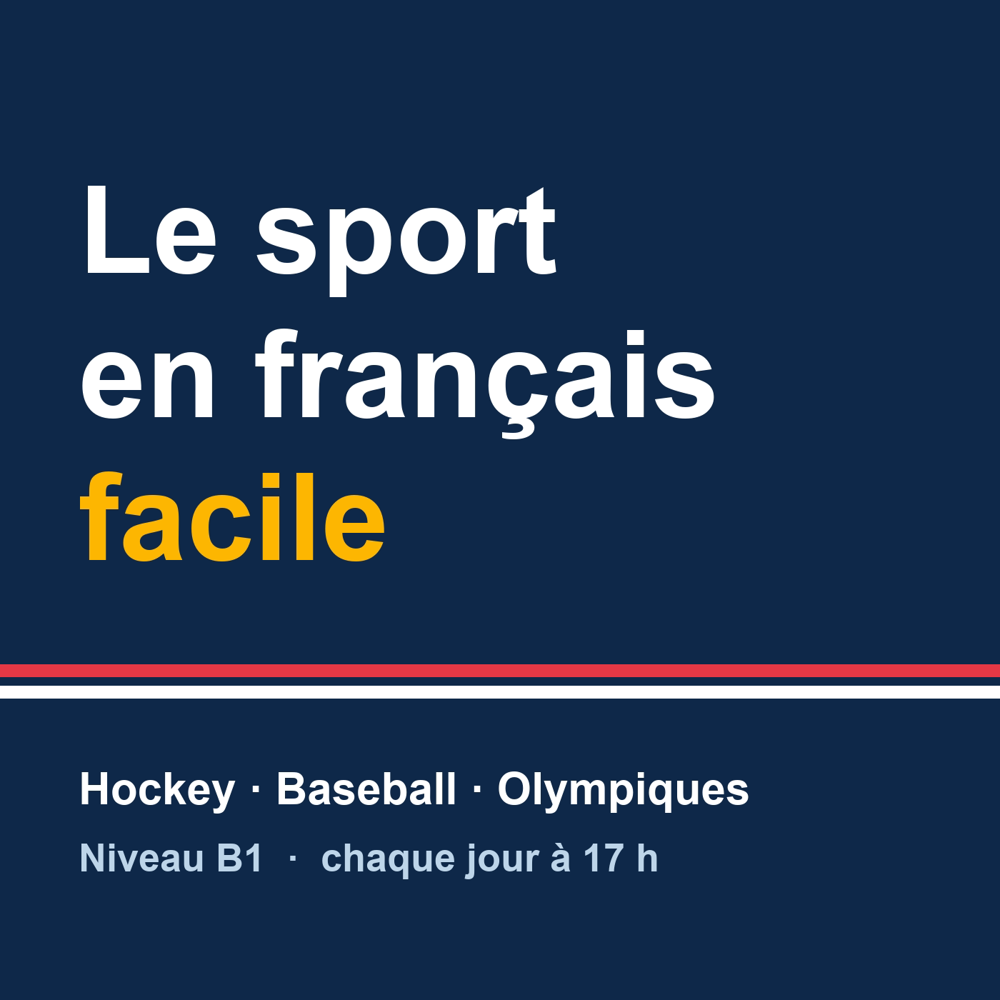

Le sport en français facile
Chaque matin : les nouvelles de la veille du hockey, du baseball et des sports olympiques, racontées en français simple (niveau B1), lentement, pour apprendre le français. Résumés basés sur les reportages de Radio-Canada Sports.
Abonnez-vous dans votre application de balados avec ce lien :
https://jmsmorris.github.io/francais-sports-podcast/feed.xml
Épisodes
- Vendredi 27 novembre 2026 — Michkov écarté, Ullmark dans l'histoire et Oldham en argent (10 min)
- Jeudi 26 novembre 2026 — Le Canadien en panne, et la Coupe Vanier approche (10 min)
- Mercredi 25 novembre 2026 — Marchand et Barkov de retour, Brignone range ses skis (11 min)
- Mardi 24 novembre 2026 — Vegas bat Edmonton, la Victoire gagne et AJ Wright prend sa retraite (10 min)
- Lundi 23 novembre 2026 — Larkin débute à Montréal, les Leafs gagnent enfin (10 min)
- Dimanche 22 novembre 2026 — Le Canadien acquiert Dylan Larkin, triplé canadien à Séoul (11 min)
- Samedi 21 novembre 2026 — Fowler perd son duel, les patineurs canadiens brillent (9 min)
- Vendredi 20 novembre 2026 — Fowler, Rose et les Alouettes : le sport d'hier en français facile (11 min)
- Jeudi 19 novembre 2026 — Hutson sauve le Canadien, la série de McDavid prend fin (10 min)
- Mercredi 18 novembre 2026 — Le Canadien brise la glace, Bedard blessé, et le secret de la Norvège (10 min)
- Mardi 17 novembre 2026 — Un premier match, un piratage et une légende qui part (12 min)
- Lundi 16 novembre 2026 — Les Canadiennes en argent et Alcaraz en force (10 min)
- Dimanche 15 novembre 2026 — Les Canadiennes en finale, la Russie exclue et les Elks champions (10 min)
- Samedi 14 novembre 2026 — Le Canadien perd, les Carabins surprennent, la Coupe Grey arrive (10 min)
- Vendredi 13 novembre 2026 — Les Canadiennes en demi-finale et la fièvre de la Coupe Grey (11 min)
- Jeudi 12 novembre 2026 — Le Canadien gagne à Boston, les Canucks souffrent (10 min)
- Mercredi 11 novembre 2026 — Pas de Russes au mondial junior, Slafkovsky veut faire mieux et les trophées des lanceurs (11 min)
- Mardi 10 novembre 2026 — Carey Price acclamé au Centre Bell, Ovechkin à Ottawa et cinq victoires retirées (10 min)
- Lundi 9 novembre 2026 — Carey Price chez les immortels, et les Canadiennes marquent encore dix buts (10 min)
- Dimanche 8 novembre 2026 — Le Canadien gagne à Toronto, la Norvège exclue et un billet pour Los Angeles (10 min)
- Samedi 7 novembre 2026 — Hockey, Carey Price et les Alouettes à la Coupe Grey (11 min)
- Vendredi 6 novembre 2026 — Un bon départ pour les Canadiennes, une crise au hockey international et le secret du repêchage de Patrice Bergeron (11 min)
- Vendredi 6 novembre 2026 — Le capitaine est de retour, et la relève arrive (11 min)